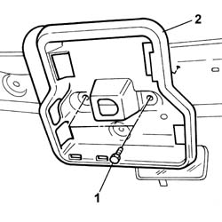

7040E57 SUPPORT for front modular courtesy light unit - R.R with ceiling trim removed
- Path
- Procedures > 70 FITTINGS > 7040 BODYSHELL INTERIOR TRIMS AND FITTINGS > 7040E interior courtesy light system > 7040E57 SUPPORT for front modular courtesy light unit - R.R with ceiling trim removed
- Kind
- repair procedure (removal / refitting; the operation number is the code)
- Applies to
- all engines; all production periods
- Interactive page
- https://sloeber94.github.io/elrnDB-fPnd/en/#/2753202
Applies to: all engines; all production periods
 Removing
Removing
 Refitting
Refitting1. Undo the retaining bolts.
2. Remove the front courtesy light mounting.

Applies to: all engines; all production periods
Refitting
RemovingPosition the front courtesy light mounting and tighten the fixing bolts.